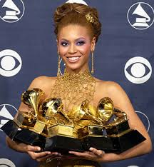

A timeline of accomplishments throughout Beyoncé's career
1981: Beyoncé Giselle Knowles is born on September 4th to Celestine “Tina” and Matthew Knowles
1988: Beyoncé entered and won her first talent show at the age of seven
1990: Beyoncé and her cousin Kelly Rowland, became part of a girl group “Girl’s Tyme” with four other girls
1996: The original line up for the group was cut to four members. The group then changed their name to “Destiny’s Child”
1998: Destiny’s child released their self titled debut album. Winning three Soul Train Lady of Soul Awards for Best R&B/Soul Album of the Year, Best R&B/Soul or Rap Artist, and Best R&B single for “No No No”.
1999: Destiny’s child released their multiplatinum 2nd album “Writing on the Wall”, which debuts number six on the Billboard Charts.
2000: Destiny’s Child, now consisting of only three members, Beyoncé Knowles, Kelly Rowland, and Michelle Williams, contributes “Independent Part I” to Charlie’s Angels soundtrack. The song spends eleven consecutive weeks at number one.
2001:
While completing their third album, Beyoncé landed a major role in the MTV made-for-television film “Carmen: the Hip Hopera “, a modern interpretation of the 19th century opera “Carmen”.
Beyoncé wins first grammy for the single “Say My Name”, which she cowrote.
Destiny’s Child goes on hiatus to pursue solo careers.
2003: Beyoncé drops her first solo album “Dangerously in Love”, where five for the songs charted number one.
2004: Beyoncé opened the grammy’s with Prince. Took home five Grammy’s, tying the record for most wins for a female artist.
2006: Released for second album “B’Day”, on her 25th birthday. Influenced by 70’s music and had a theme of female empowerment.
2007: First woman to win the International Artist Award.

2008: Secretly married long time boyfriend, hip hop mogul JAY-Z.
2009: Released third album, “I Am….Sasha Fierce”, that contained two CDs.
2010: Beyoncé had ten Grammy nominations and took home six. Becoming the only female artist to win six trophies in one night.
2012: Beyonce and JAY-Z welcomed their first child Blue Ivy Carter into the world.
2013: Beyoncé unexpectedly dropped her fifth album with no prior announcements while on tour. This act would soon be referred to as “Pulling a Beyoncé” and was later repeated by multiple musicians.
2016:
Beyoncé released her sixth album, “Lemonade” in the form of a visual album on HBO. Which sparked the question across the internet, “Who is Becky?”.
Beyonce performed at the Super Bowl for the second time alongside Bruno Mars and ColdPlay
2017: Beyoncé announces second pregancy via an Instagram post. With 11.1 million likes, the photo became the most liked photo of all time. Later giving birth to twins, Sir and Rumi Carter.
2018:
Beyoncé received the WACO Theater Humanitarian Award for supporting a number of relief efforts which were all funded through her non-profit organization, BeyGOOD
Beyonce was also the first black woman to headline Coachella with her HBCU themed, 2 hour performance. During which Destiny’s Child reunited briefly on stage to perform some of their classic hits through the years
2019:
Beyoncé partnered with Adidas for a rerelease of her activewear line Ivy Park.
Beyoncé released a Netflix documentary titled “Homecoming” of her Coachella performance with behind-the-scences footage.
She also kept the Homecoming fun going by releasing a brand new live album of the historical performance
2020:
Beyoncé collaborated with fellow Houston native Megan Thee Stallion on Stallion’s hit song Savage. The proceeds made from the song were give to Bread of Life, Houston’s Covid-19 relief efforts.
Beyoncé directed the film Black is King which premiered exclusively on Disney + in July of this year. The visual companion piece to Beyonce’s 2019 album The Lion King: The Gift, it tells the story of an exiled African king who must reclaim his throne. Beyonce plays an ancestor guiding the royal on his journey.
If you haven't heard any of Beyoncé's Grammy winning or classic hits over the last 25 years, feel free to check out these playlist on any of the following streaming platforms.